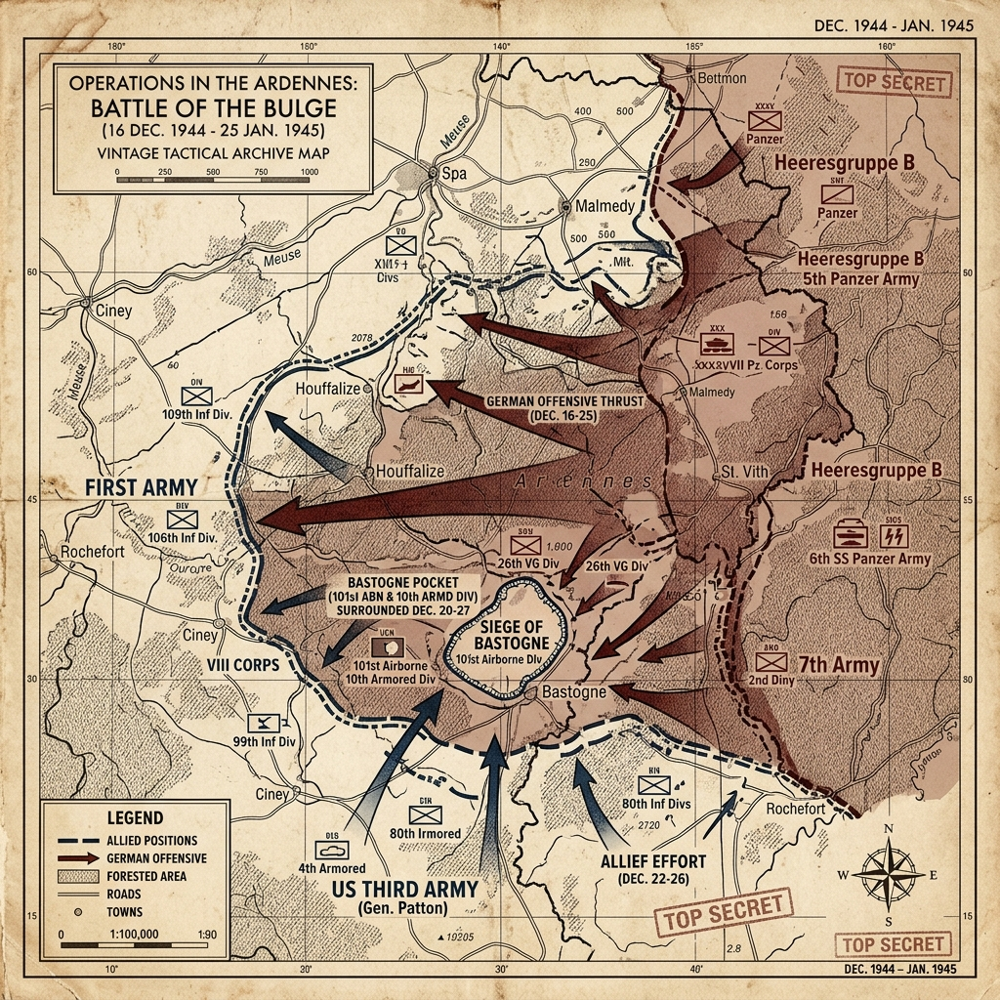

Strategic Context & The Final Gamble
By the autumn of 1944, Nazi Germany was facing military collapse. Allied armies were closing in from the west, while the Soviet Red Army was preparing a massive winter offensive in the east. Adolf Hitler, refusing to accept defeat, conceived a surprise counteroffensive in the West, codenamed Unternehmen Wacht am Rhein (Operation Watch on the Rhine).
Hitler's plan was to launch a surprise attack through the Ardennes region—the same forested sector used in the 1940 invasion of France—cross the Meuse River, and capture the Allied supply port of Antwerp. Hitler believed this bold stroke would split the American and British armies, shatter the Allied coalition, and force the Western Allies to sign a separate peace, allowing Germany to focus its remaining resources on the Soviet Union.
Military Doctrines & War Plans
The German plan relied on speed, surprise, and poor weather. The OKW planned to attack during a period of heavy winter storms that would ground the Allied air forces, neutralizing their air supremacy. The German armored spearheads, including the 6th Panzer Army under Sepp Dietrich and the 5th Panzer Army under Hasso von Manteuffel, were to bypass strongpoints and rush toward the Meuse.
The Allied High Command was caught off guard. Believing the Ardennes was too rugged for winter operations, they used the sector as a quiet zone, deploying inexperienced divisions to get acclimated to the front, and battle-weary divisions to rest. The American lines were thinly held, with only a few divisions guarding a 75-mile front.
Weapons, Technology, and Logistics
The Germans deployed their latest heavy armor, including the Tiger II (King Tiger) and the Panther tank. These tanks possessed superior armor and guns compared to the American M4 Sherman, but were heavy, slow, and consumed large quantities of fuel, which Germany lacked.
Logistics were the critical bottleneck for the Wehrmacht. The German army relied on capturing American fuel depots to sustain their advance. If they failed to capture these depots quickly, their armored columns would run out of fuel and be abandoned on the forest roads.
Opening Moves & Initial Clash
At 5:30 AM on December 16, 1944, the Germans launched their offensive with a massive artillery bombardment along a 75-mile front. Panzers and infantry plunged across the border under cover of heavy fog, catching the American forces completely by surprise.
The German advance created a massive 'bulge' in the Allied line. Several American units were bypassed and surrounded. In the north, the 99th and 2nd Infantry Divisions made a heroic stand at Elsenborn Ridge, preventing the 6th Panzer Army from capturing key roads. In the south, the Germans surrounded two regiments of the 106th Infantry Division on the Schnee Eifel, resulting in the surrender of over 7,000 American soldiers.
The Siege of Bastogne
The battle centered on the town of Bastogne, a vital crossroads where seven main roads in the Ardennes met. The Germans needed to capture the town to keep their supply lines moving. Eisenhower ordered the 101st Airborne Division, commanded by General Anthony McAuliffe, to hold Bastogne at all costs.
By December 21, the Germans had completely surrounded Bastogne, trapping the paratroopers. Lacking winter clothing, medical supplies, and ammunition, the defenders held out in freezing temperatures. On December 22, the German commander sent a formal demand for surrender. McAuliffe issued his famous one-word reply: 'Nuts!' which boosted the morale of the defenders and the Allied public.
Bastogne was not the only critical American stand. At St. Vith, US troops delayed the German timetable for days before withdrawing under orders—buying time that proved as operationally important as the more famous siege of Bastogne.
Patton's Counteroffensive & The Clearing Skies
At the start of the offensive, Eisenhower met with his commanders in Verdun. General George S. Patton, commander of the Third US Army, made a bold promise: he would pivot his entire army 90 degrees north and launch a counteroffensive to relieve Bastogne within three days. This required moving over 130,000 vehicles in winter conditions.
On December 23, the weather cleared, allowing Allied fighter-bombers to take off. The aircraft swarmed the battlefield, bombing German columns and dropping supplies to the defenders at Bastogne. On December 26, armored units from Patton's 4th Armored Division broke through the German ring, relieving Bastogne and ending the siege.
Pivot Points & Allied Decisions
The most critical decision was the stand at Elsenborn Ridge and St. Vith, which delayed the German advance and prevented them from securing key roads. This delay allowed the Allies to bring in reinforcements, including the 82nd and 101st Airborne Divisions, and deploy them at critical choke points.
Another factor was the failure of Otto Skorzeny's Operation Greif—a covert mission where German commandos dressed in American uniforms tried to capture bridges and sow confusion behind Allied lines. Although they caused initial panic, the Americans quickly established checkpoints, using trivia questions (like naming baseball players) to identify the infiltrators.
The Soldier's Ordeal & War Crimes
For the common soldier, the battle was a struggle against both the enemy and the winter. Temperatures dropped below freezing, and soldiers suffered from frostbite and trench foot. The dense forests of the Ardennes, covered in snow, became a landscape of artillery shell bursts and close-quarters combat.
The battle saw notable war crimes. On December 17, an SS unit under Joachim Peiper executed 84 disarmed American prisoners of war near Malmedy. News of the Malmedy massacre spread rapidly among American units, hardening their resolve and leading to warnings that SS troops would be executed upon capture.
The Aftermath & Strategic Consequences
By late January 1945, the Allies had largely restored the front line, ending the battle (US Army histories commonly close the campaign on 25 January; some accounts extend a few days further). The Battle of the Bulge was the largest and bloodiest battle fought by the US Army in the European theater, producing on the order of 80,000–90,000 American casualties.
However, the German offensive failed completely. Hitler had exhausted his last operational reserves of manpower, armor, and fuel in a gamble that achieved nothing. By throwing away his best remaining divisions in the West, he left the path into the German industrial heartland undefended, significantly accelerating the end of the war.
Historical Legacy & Long-term Impact
The Battle of the Bulge is remembered as a symbol of American soldier resilience and tactical flexibility. Patton's rapid pivot of the Third Army is studied in military academies as a classic example of operational mobility.
The victory confirmed that Germany was defeated, leaving only the timing of the final collapse to be decided, and allowing the Allies to coordinate their final advance into Germany from both East and West.
The Axis Perspective
For the German officer corps, the Ardennes Offensive was a suicide mission born of Hitler's complete detachment from military reality. The generals knew they lacked the fuel, the ammunition, and the air cover required to reach Antwerp. Their primary objective became merely surviving the inevitable Allied counterattack. The offensive relied on capturing American fuel depots to keep the panzers moving, a precarious strategy that quickly unraveled. General Hasso von Manteuffel, the highly capable commander of the 5th Panzer Army, explicitly noted the unrealistic expectations forced upon them by the High Command: "The operation was out of proportion to our strength... we had neither the fuel nor the ammunition for a sustained offensive." When the skies cleared and Allied aircraft swarmed the battlefield, the German columns were trapped on narrow forest roads, slaughtered from the air. As the surviving German forces limped back to the Siegfried Line, leaving their destroyed armor behind, the absolute finality of their defeat was undeniable even to the most fanatical SS officers.
Tactical Map & Theater of Operations
A map outlining the winter salient and Allied counteroffensive lines in the Ardennes:

Figure: Battle of the Bulge, December 1944: Detailing the German salient (the 'Bulge') through the Ardennes forest and the surrounded Bastogne pocket.
Unusual and Little-Known Facts
The Battle of the Bulge is famous for Bastogne and snow. Its lesser-known edges include linguistic trickery, fuel as destiny, and American stands that never got Hollywood treatment.
Operation Greif sent English-speaking German commandos behind Allied lines in US uniforms and jeeps, under Otto Skorzeny's overall scheme. They cut wires, switched road signs, and sowed paranoia. The military effect was limited; the psychological effect was enormous—American checkpoints began quizzing strangers on baseball and state capitals.
German tanks literally ran out of gas. The offensive plan assumed capture of Allied fuel dumps. When columns were delayed at St. Vith, Bastogne, and a dozen crossroads fights, panzers stalled with empty tanks—an iron force defeated as much by logistics as by artillery.
The defense of St. Vith was as operationally important as Bastogne, if less mythologized. American troops held the road hub long enough to wreck the German timetable before withdrawing under orders—buying days the offensive could not spare.
General Anthony McAuliffe's reply 'Nuts!' to a German surrender demand at Bastogne baffled the opposing officers, who needed it explained as a rejection. The one-word answer became an instant morale weapon for the 101st Airborne and the American press.
Patton's Third Army disengaged from an eastward fight, wheeled north, and attacked into the southern flank of the bulge in a matter of days—an operational feat of staff work and road march as impressive as any single battlefield clash in the campaign.
These details do not replace the main operational story—but they are often the ones that stick, because they reveal contingency, myth-making, and human texture beneath the familiar headlines.
Archives, Primary Sources & Further Reading
To explore official war maps, diaries, and logs from the Ardennes Campaign:
- The National WWII Museum - Battle of the Bulge A detailed archive of the Ardennes campaign, featuring veteran interviews and battle maps.
- U.S. Army Center of Military History - Ardennes Campaign Official US Army monographs, including the green book 'The Ardennes: Battle of the Bulge'.
- The Bastogne War Museum Official Page Museum repository containing original artifacts, weapons, and letters from the siege of Bastogne.